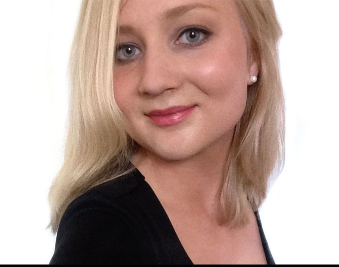

About me
Hello!
I am currentely studying my fifth and final year at Umeå school of Architecture at the master program Laboratory of Sustainable Architectural Production (LSAP) . I recently started with my master thesis project so in the spring I will graduate.
I was born in Jönköping and grew up 20 kilometers outside in a town called Habo. When I was 13 years old me and my family moved to Sundsvall. I went to Skvaderns Gymnasieskola where I studied Natural science. When I graduated from Upper Secondary School I either wanted to study medicine or architecture. But after designing and making a model of a family house (see project family house model) I decided that I really wanted to be an architect. So when I was eighteen years old I moved to Umeå to further my studies at Umeå School of Architecture.
I am also really interested in interior design, graphic design and design in general.
Contact info
Name: Anna Carlsson
E-mail: annac@live.se
Mobile: 0730 35 58 78
Curriculum vitae
Education
September 2014 to June 2016 Master of Architecture, LSAP – Laboratory of Sustainable Architectural Production, Umeå School of Architecture
June 2015 to August 2015 Summer courses in Web design, Uppsala University and Mid Sweden University
September 2011 to June 2014 Bachelor of Architecture, Umeå School of Architecture
August 2008 to June 2011 Natural Science program, Skvaderns Gymnasieskola, Sundsvall
Work experience
From August 2015 Renovation and extension proposals for villa, private contract
June 2013 to August 2014 Paramedic within dementia care, Hemgården, Umeå
June 2012 to August 2012 Paramedic within geriatric care, Alnösol, Sundsvall
January 2012 to June 2012 Annotater disability help, Umeå Universitet, Umeå
June 2011 to August 2011 Paramedic within geriatric care, Alnösol, Sundsvall
June 2010 to July 2010 Job within geriatric care, Lindgården, Sundsvall
July 2009 to August 2009 Job on a new house construction with painting and woodwork
June 2008 to July 2008 Job on a new house construction with painting and woodwork
Skills
TECHNICAL ArchiCad, drawing pad, hand drawing, HTML and CSS, Illustrator, InDesign, Microsoft Office, model making (hand & 2D-cutter), Photoshop, Revit Architecture, sketching, SketchUp, Velux Daylight Visualizer, V-Ray
LANGUAGES Swedish, English and French (basic knowledge)